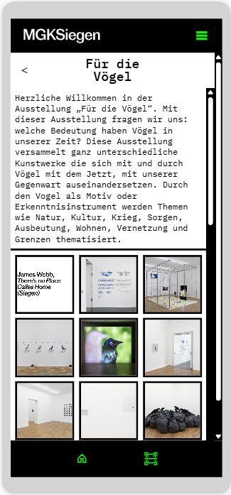
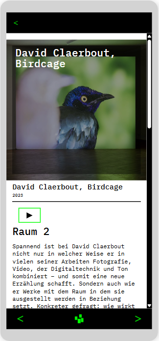
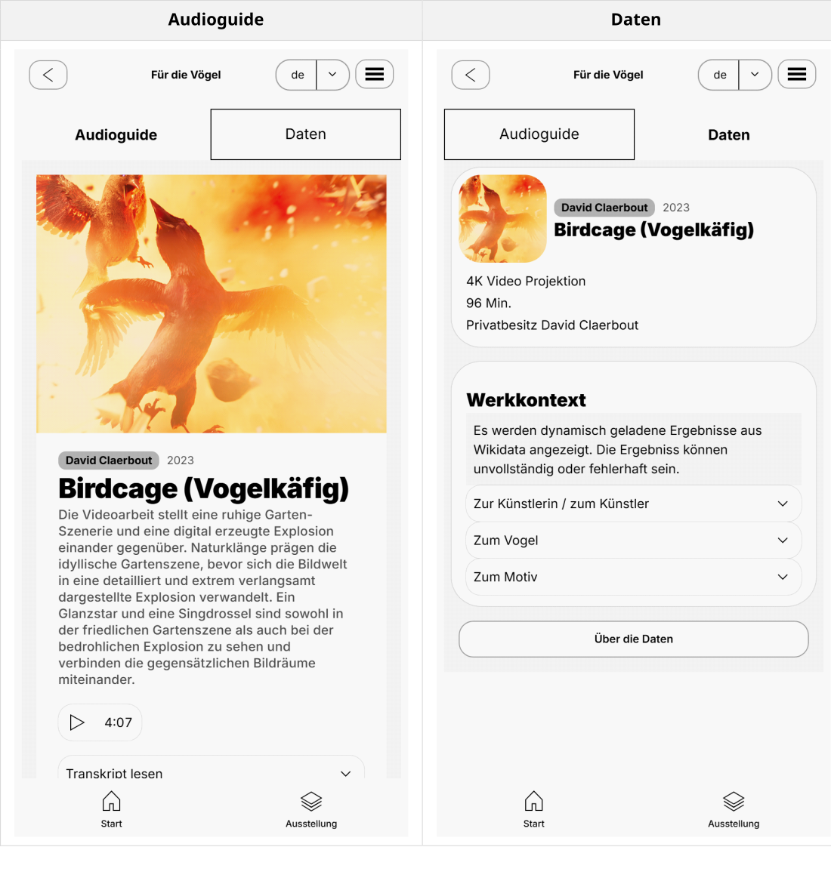

Prototyp
Die bestehende Anwendung zu Für die Vögel bildete die Grundlage für die prototypische Weiterentwicklung. Der ursprüngliche Ausstellungsguide besaß 43 Werke. Für den Prototyp wurde der Umfang auf neun exemplarische Werke reduziert, jeweils ein Werk aus jedem der neun Ausstellungsräume. Dabei wurden auch die unterschiedlichen Werktypen berücksichtigt.
Ziel der Weiterentwicklung war es, die Projektstruktur nachvollziehbarer zu gestalten und die Vermittlungsinhalte differenziert und strukturiert bereitzustellen. Zusätzlich sollten weiterführende Werk- und Kontextinformationen zugänglich gemacht werden.
Bestehende Anwendung
In der bestehenden Anwendung wurden Werkdaten zum Teil so gespeichert, wie sie im Interface angezeigt wurden. Beispielsweise wurden die Namen der Künstler:innen und der Werktitel gemeinsam in einem Feld verwaltet. Eine Orientierung an musealen Metadatenstandards oder die Verwendung von Normdaten und kontrollierten Vokabularen waren nicht Teil der Datenpflege. Zudem waren die deutsche und englische Sprachfassung in getrennten Anwendungen organisiert und die Projektstruktur über mehrere Anwendungen hinweg gewachsen. Dadurch entstanden unübersichtliche Strukturen und teilweise schwer nachvollziehbare Benennungen. Eine Bereitstellung der Werkdaten für die externe Nachnutzung war in der bestehenden Anwendung nicht vorgesehen.


Weiterentwickelte Anwendung
Nachfolgend kann der Prototyp selbst erprobt werden:
Funktionalitäten
Im Prototyp wurden die Werkangaben in getrennten Datenfeldern erfasst. Die Kernfunktion liegt dabei in der Integration einer Audioguide- und Datenebene.
Audioguide: Für Werkbetrachtung und Vermittlung. Enthält Audiospur, Werkabbildungen, kurze Werkbeschreibung, Audioguide-Transkript sowie zusätzliche Abbildungen und deren Bildrechte.
Daten: Für ausführlichere Werkangaben und zusätzliche Kontextinformationen. Enthält die Werkmetadaten und über Wikidata bereitgestellte Informationen zu Künstler:in, Vogelart und Motiv.
Die Aufteilung ermöglicht, Informationen schrittweise zu erschließen und unterschiedliche Inhalts- und Nutzungstiefen innerhalb derselben Anwendung anzubieten. Beide Ansichten besitzen dabei dieselbe Datenbasis.

Weitere Funktionen umfassen eine informativere Werkübersicht, die gemeinsame Verwaltung von deutsch- und englischsprachigen Inhalten innerhalb einer Anwendung, die strukturierten Werk- und Kontextinformationen mit Verweisen auf Normdaten und kontrollierte Vokabulare sowie einen CSV-Export der Werkmetadaten. Wie die Daten dafür aufbereitet wurden, zeigt die Seite Daten.